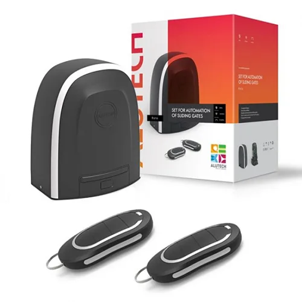
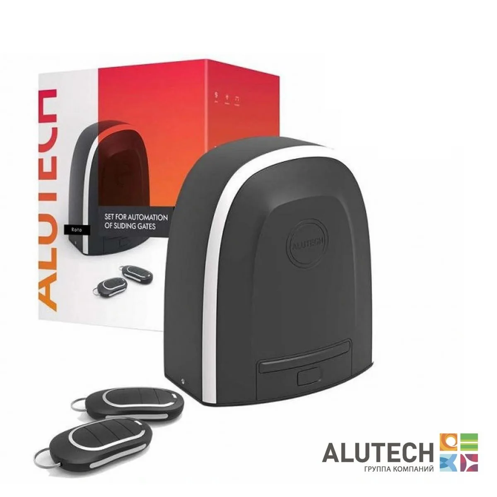
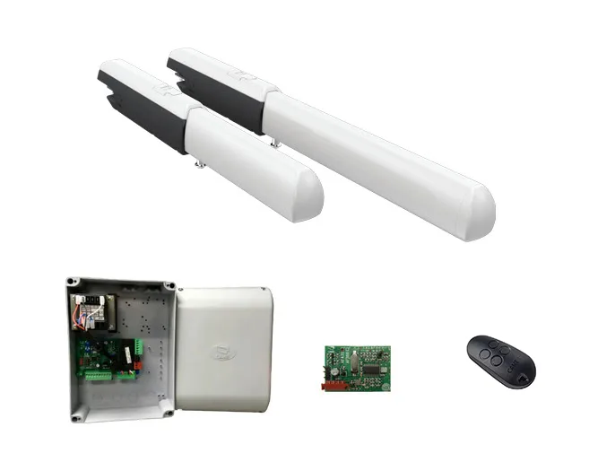
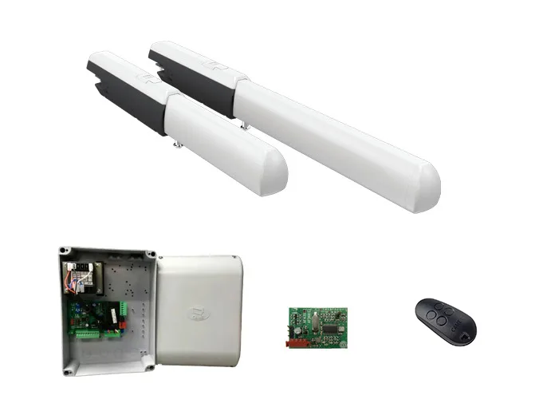
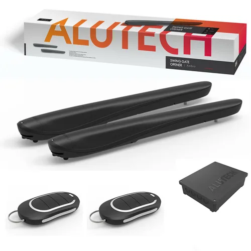

{kind=link}
{kind=link}
{kind=link}
{kind=link}
{kind=link}
{kind=link}
{kind=link}
{kind=link}
{kind=link}
{kind=link}
{kind=link}
{kind=link}
Считаем вес ворот
Учитываем заполнение полотна, фурнитуру и зимнюю нагрузку.
Изготавливаем надежные каркасы откатных ворот, рассчитанные на долгий срок службы и стабильную эксплуатацию. Основа конструкции — прочная внешняя рама из профильной трубы, внутренняя обрешетка под дальнейшую обшивку и консольная часть с треугольным противовесом. Такое решение обеспечивает устойчивость створки, плавное открывание и закрывание, а также удобство в повседневном использовании.
Каркас можно обшить профнастилом, металлосайдингом, штакетником, жалюзи и другими материалами в зависимости от ваших задач и предпочтений.
Распашные ворота - это классическая надежная конструкция из двух створок на петлях, закрепленных на опорных столбах. Створки из металлического каркаса с разным заполнением открываются внутрь или наружу участка, подходят для частных домов, дач, коммерческих и производственных объектов.
Изготавливаем распашные ворота по индивидуальным размерам проема, подбираем заполнение, цвет и вариант управления. По желанию можно предусмотреть калитку в едином стиле, автоматику и порошковую покраску, чтобы въездная группа выглядела аккуратно и работала без лишних доработок на объекте.
Каркас распашных ворот — надежное решение для дома, дачи или коммерческого объекта. Прочная металлическая конструкция выдерживает ежедневную эксплуатацию, устойчива к нагрузкам и подходит под различные варианты обшивки. Каркас изготавливается из качественной профильной трубы, что обеспечивает жесткость, долговечность и аккуратный внешний вид готовых ворот.
Изготавливаем каркасы распашных ворот по стандартным и индивидуальным размерам. При необходимости конструкцию подготавливаем под установку автоматики, замков и дополнительных элементов. Это удобный вариант для тех, кто хочет получить крепкие, практичные и долговечные ворота без лишних доработок на объекте.
Металлическая калитка — это практичное и долговечное решение для организации удобного входа на участок. Конструкция из профильной трубы обладает высокой прочностью, устойчивостью к ежедневной эксплуатации и подходит для установки в составе забора, воротной группы или отдельного входа.
Изготавливаем калитки под частные, коммерческие и промышленные объекты с подбором заполнения, покрытия, замка, направления открывания и комплектации под монтаж.
Забор из профнастила — один из самых популярных вариантов ограждения благодаря сочетанию прочности, доступной стоимости и простоты эксплуатации. Металлический каркас обеспечивает жесткость конструкции, а листы профнастила формируют надежное сплошное заполнение. Такой забор устойчив к погодным условиям, не требует сложного ухода и подходит для эксплуатации в любое время года.
Вертикальное заполнение — классический вариант монтажа профнастила. Подходит для большинства объектов, смотрится строго и аккуратно, обеспечивает хорошую жесткость конструкции.
Горизонтальное заполнение — современное решение с более стильным и выразительным внешним видом. Такой вариант часто выбирают для частных домов, современных коттеджей и коммерческих объектов, где важна не только защита территории, но и внешний вид ограждения.
Забор из металлосайдинга — это прочное, современное и аккуратное ограждение для частного дома, дачи, коттеджа, коммерческого или производственного объекта. Такой забор сочетает в себе надежность металлической конструкции, эстетичный внешний вид и практичность в эксплуатации. Металлосайдинг хорошо защищает территорию от посторонних взглядов, устойчив к погодным условиям и долго сохраняет аккуратный внешний вид.
Вариант заполнения подбирается под внешний вид объекта и задачу: забор можно выполнить с горизонтальным, односторонним или двусторонним заполнением, а также оформить в едином стиле с воротами и калиткой.
Забор из металлического штакетника — это практичное, аккуратное и современное решение для частного дома, дачи, коттеджа или коммерческого объекта. Такой забор сочетает надежность металлической конструкции, привлекательный внешний вид и возможность подобрать оптимальный вариант по высоте, цвету и типу заполнения. Металлический штакетник хорошо смотрится как в классическом, так и в современном стиле.
Конструкция устойчива к погодным условиям, не требует сложного ухода и подходит для длительной эксплуатации. Возможна установка в едином стиле с калиткой и воротами.
Забор жалюзи — это современное и практичное решение для частного дома, дачи, коттеджа или коммерческого объекта. Такой забор сочетает надежность металлической конструкции, аккуратный внешний вид и хорошую защиту участка. Особенность забора жалюзи — расположение ламелей под углом, благодаря чему сохраняется вентиляция, уменьшается парусность и участок частично закрывается от посторонних взглядов.
Заборы жалюзи хорошо подходят для современных домов, гармонично сочетаются с воротами и калиткой, а также могут изготавливаться по индивидуальным размерам и в разных цветах.
Надёжные подъёмные ворота для частного гаража с тёплым полотном из сэндвич-панелей, плотным прилеганием по контуру и возможностью автоматизации потолочным приводом. Подходят для ежедневной эксплуатации, помогают сохранить тепло в помещении и не занимают место перед гаражом при открывании.
Рольворота (рулонные ворота) — это компактная система для защиты гаражей, въездов во дворы и торговых площадей. Они работают по принципу рольставней: гибкое полотно при открытии сворачивается в рулон, который прячется в защитный короб над проемом.
Подходят для гаражей, навесов, торговых павильонов и хозяйственных проемов. Монтаж можно выполнить внакладку снаружи, внутри помещения или непосредственно в проем, а по внешнему виду рольворота легко согласовать с калиткой и фасадом.
Рольставни защищают окна, двери, витрины и технические проемы от постороннего доступа, пыли, яркого солнца и уличного шума. Полотно поднимается вверх и компактно уходит в короб, поэтому система не занимает место перед проемом.
Подберем профиль, короб и способ управления под частный дом, магазин или коммерческий объект: от ручного механизма до электропривода с выключателем или пультом.
Для откатных ворот важнее всего вес створки, запас мощности и состояние самой механики. Если ворота тяжелые, часто открываются или работают зимой, привод лучше брать с запасом.
Ниже мы собрали два понятных варианта: для частного дома и для более тяжелых ворот. Сначала смотрите на вес створки и условия работы, а затем уже на конкретную модель.
Учитываем заполнение полотна, фурнитуру и зимнюю нагрузку.
Для частных ворот обычно комфортен запас 30-50% по массе.
При необходимости включаем фотоэлементы, лампу и зубчатую рейку.
Начните с веса ворот и режима работы, а модель уже выбирайте внутри подходящего диапазона.
Для частных откатных ворот, где нужен понятный запас по весу и спокойная ежедневная работа.

Для тяжелых створок, зимней эксплуатации и объектов, где важен запас по мощности.

Для распашных ворот важны ширина и масса створки, геометрия столбов и направление открывания. Если эти размеры не учесть заранее, привод работает с лишней нагрузкой и быстрее изнашивается.
Ниже собраны готовые варианты для стандартных, усиленных и более универсальных задач. Сначала смотрите на створку и условия монтажа, потом уже на конкретную модель.
Смотрим ширину и массу каждой створки, а не только общий проем.
Учитываем столбы, направление открывания и место под привод.
Так автоматика спокойнее работает каждый день и дольше служит.
Сначала определите размеры створки и условия монтажа, а затем открывайте подходящий комплект.
Для стандартных распашных ворот частного дома и спокойной ежедневной эксплуатации.

Для более крупных створок, когда нужен запас по усилию и длине хода привода.

Универсальный комплект для частных объектов, где важны простая комплектация и запас.

Собрали в одном блоке механику откатной системы и аксессуары для автоматики: фотоэлементы, сигнальные лампы и пульты управления.
Фурнитура для плавного хода откатных ворот: балка, ролики, каретки и уловители.
Проводные фотоэлементы для безопасной работы автоматики и шлагбаумов Alutech.
Сигнальная лампа со встроенной антенной для заметной индикации работы ворот.
Четырехканальный пульт для управления автоматикой и шлагбаумами Alutech.
Металлические раздвижные решетки — компактная защита для окон, дверей и внутренних проемов. Конструкция складывается по принципу «гармошки», в открытом состоянии занимает минимум места и подходит для торговых, офисных и частных объектов.
Встроенный замок, проушины под навесной замок и откидная нижняя направляющая подбираются под задачу. Монтаж возможен внаклад или в проем, цвет согласуем под объект. Поставляем по РФ, установка обсуждается отдельно; среди заказчиков — Билайн, Мегафон, МТС, Tele2, DNS, банки и частные магазины.
{kind=link}
{kind=link}
{kind=link}
{kind=link}
{kind=link}
{kind=link}